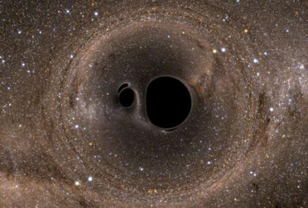

新浪科技讯 北京时间7月7日消息，据国外媒体报道，如今我们已能探测到引力波的存在，新一代观星者开始把注意力投向宇宙，利用敏感度极高的天文台进行观测。采用引力波探测器，我们将对自己在宇宙中所处的位置产生全新的认识。 虽然有新技术的帮助，但这些技术仍然敏感度欠佳。因此我们只能观测到规模最大、最令人不快的事件：黑洞合并。目前为止，美国激光干涉引力波天文台（简称LIGO）已经探测到了三次半黑洞合并，其中第三次刚好位于可探测到的边缘，因此尚未确定。这些黑洞比想象中还要大，不禁引人深思：这些黑洞是第一次合并呢？还是已经经历了数次合并呢？ 如今，科学家们提出了一种或能确定这些黑洞是否为首次合并的方法。
黑洞是恒星的终极结局。恒星质量巨大。随着恒星物质向内挤压，产生的高温和高压足以引发核聚变。核聚变的产物之一便是能量，可提供足够的推力、平衡恒星向内坍缩的趋势。但这只是骤变前短暂的平静。在高温下，氢变为氦，并进一步转化为锂和铍……以此类推，直到恒星的核心形成铁元素。发展到这一程度，核聚变便会终止，引力开始发挥作用，使所有物质都向内坍缩。 如果恒星质量较小，坍缩规模也较小，恒星就像一块燃尽的煤炭一样，静静地转化为白矮星。如果质量较大，恒星便会发生剧烈爆炸，转变为中子星；而如果质量足够大，便会变为黑洞。这是宇宙中密度最大的两种天体。 但物质的转化并不会就此止步。所有天体都在太空中四处漂移，且会互相吸引。如果离得过近，中子星和黑洞就会吸收彼此的物质（也许还有附近的其它天体，如白矮星）。这可以使中子星获得足够的质量、向黑洞转化，或让已经形成的黑洞进一步增大。那么，当我们观测到两个黑洞合并时，能否判断这是否为它们的首次合并呢？
判断方法之一是考察其质量分布。每个黑洞都有质量下限，若小于这一下限，黑洞就无法形成。此外，虽然部分恒星质量可高达太阳的200倍以上，但并非所有恒星都会形成黑洞。因此研究人员将形成黑洞的恒星质量下限定为太阳质量的50倍。黑洞形成后，会遇到其它黑洞，进一步扩大自身规模。每个黑洞此前吞没的黑洞数量会影响它在未来合并中的质量比。 为确定这在实际观测结果中究竟意味着什么，该研究团队分析了黑洞在经历数次合并后、质量分布会如何变化。假设死去的恒星形成的黑洞为第一代，两个第一代黑洞合并形成第二代。在此之后有两种可能：一个第二代黑洞和一个第一代黑洞发生合并，或者两个第二代黑洞发生合并。 但在此之后发生的一切都取决于第一代黑洞的特性。由于我们缺乏黑洞数据，研究人员从黑洞的质量和旋转分布中选取了一个范围区间，并将该范围内的黑洞随机两两合并，计算出最终的质量、旋转速度和合并后的质量比。这就为研究提供了第二代黑洞数据。通过这种方法，研究人员获得了两组黑洞，质量和旋转速度分布范围各有不同。
接下来，研究人员再将这两组黑洞（两个第二代黑洞，或一个第一代黑洞和一个第二代黑洞）进行随机合并，又生成了两组质量分布不同的黑洞。 有了这些数据，研究人员还能计算出这些黑洞合并的大致时间。第二代黑洞之间的合并一定发生在第一代黑洞合并之后，也就是说，与第一代黑洞合并相比，我们观察到的第二代黑洞合并时间距我们更近。 现在来总结一下：我们从预计的质量和旋转速度分布着手，得出了合并过程中的三种质量比预计分布结果，以及旋转速度的预计分布结果。这些分布结果应当在过去的不同时期表现出来（同时有所重叠）。问题是，我们究竟能否观测到它们呢？
答案很可能是肯定的。据研究人员称，在计算了约20个黑洞合并过程后，我们应当能区分出两个第一代黑洞的合并和两个第二代黑洞的合并。而要分辨出第二代黑洞与第一代黑洞的合并，则需要再进行100多次观测。 这只是就目前的设计精度而言。假如LIGO天文台和欧洲引力波天文台（Virgo）的升级顺利进行，敏感度有所提高，上述工作难度便会大大降低。此外，升级后的硬件设备将对远古时期发生的黑洞合并更加敏感，使科学家得以扩大质量分布范围。 我们从中能有何收获呢？这些研究为我们打开了一扇窗口，让我们更好地了解生生不息的宇宙、以及宇宙中的黑洞。我们将观测到不同等级的黑洞合并，以及不同代际的黑洞。这些观测结果将以前所未有的方式，对现有的天体物理学模型进行测试。